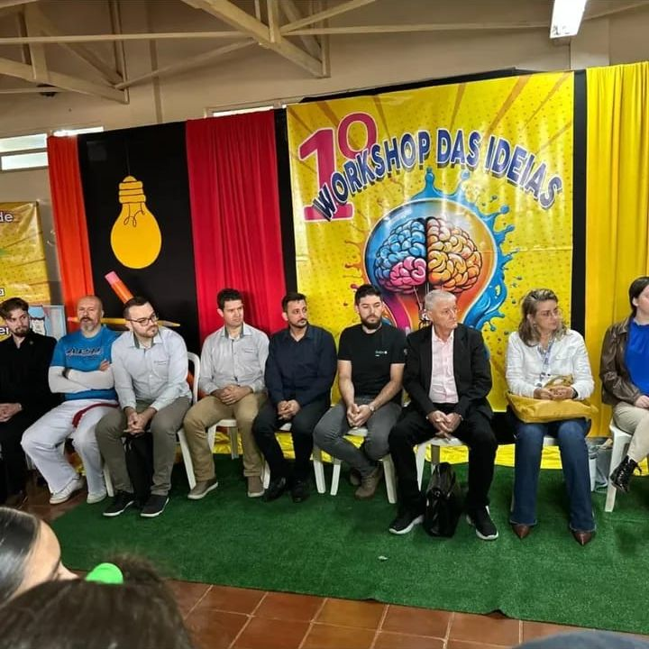
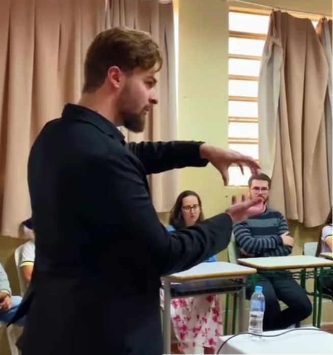

Workshop das Ideias
Organizado pelo Grêmio Estudantil Fênix, juntamente
com o professor Doni, ocorreu no dia 15 de maio no período da manhã o 1º Workshop de Ideias.
Vários convidados vieram até o Colégio compartilhar seu conhecimento por meio de oficinas.
Alunos do Grêmio Estudantil juntamente com o professor Doni, sendo estes os responsáveis pela promoção e organização do Evento.
Responsáveis pela execução das Oficinas.

Alguns dos ministrantes das oficinas na cerimônia de abertura do Evento.
Alunos e a professora Eliane responsável pela oficina de Literatura e Escrita.

Elano Mazon ministrante da Oficina sobre Projeto de Vida.
Pedagoga Vane e professora Taise, em um dos espaços instagramáveis do evento.
Alunos com a Professora Maria Inês, responsável pela oficina de criatividade.
Membros do Grêmio estudantil conduzindo a cerimônia de abertura do Workshop
Oficina sobre educação financeira-Cresol com o Luiz Carlos
Por: Henrique G. M. da Silva e Raitana G. Camargo